CH02-063 — images
【締切前の燃焼】完成直前に折れる理由
ep
CH02
Script Viewer
snapshot
guide
台本
音声
サムネ
画像
CH02-063
画像
updated_at: 2026-01-13T11:01:50.708525Z
run_id:
CH02-063_mix433_20260106
CH02-063
未完の山／テーマの紹介
CH02-063
飽きる理由の列挙／飽きる理由の具体例
CH02-063
熱量の持続性／骨組みの重要性
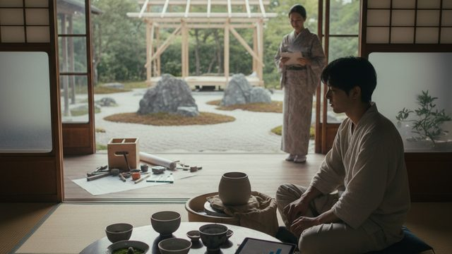
CH02-063
サンクコストの罠／小さな完了の積み重ね
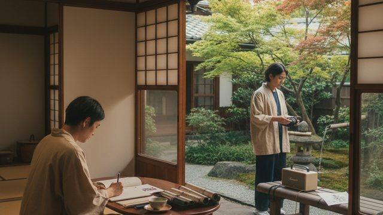
CH02-063
作業のリズムを変える
CH02-063
小さなゴールの設定／進捗の可視化
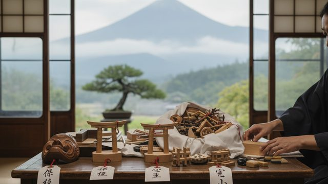
CH02-063
未完の山の原因／保留の重要性
CH02-063
報酬の心理
CH02-063
怖さを減らす方法
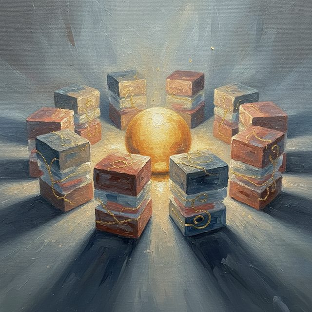
CH02-063
時間ブロックの重要性／進捗の可視化
CH02-063
自己評価の低下／小さな完了の積み重ね
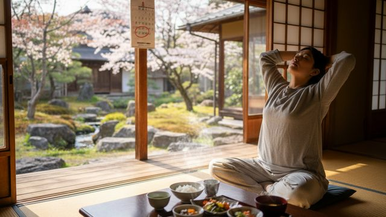
CH02-063
体力の重要性／持久力の重要性／締め切りの前倒し
CH02-063
振り返りの重要性／約束の重要性／完成の記録
CH02-063
アイデアの保管／自己語りの重要性
CH02-063
リズムの作り方
CH02-063
環境の整備／質の調整
CH02-063
習慣の重要性／小さな完了の具体例
CH02-063
期待の調整
CH02-063
未完の山の整理
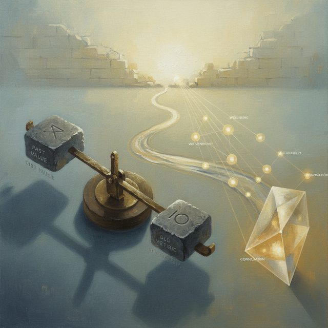
CH02-063
比較の軸の変化
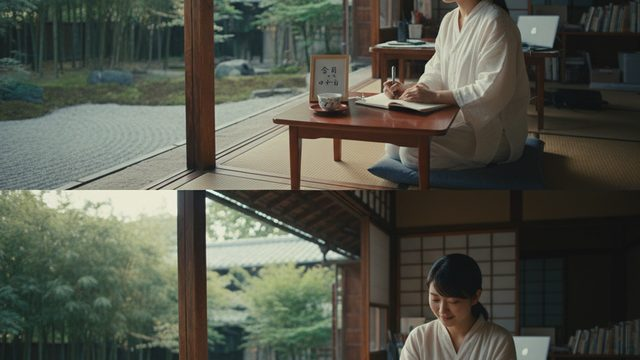
CH02-063
儀式の重要性
CH02-063
道標の作り方／チームの役割分担
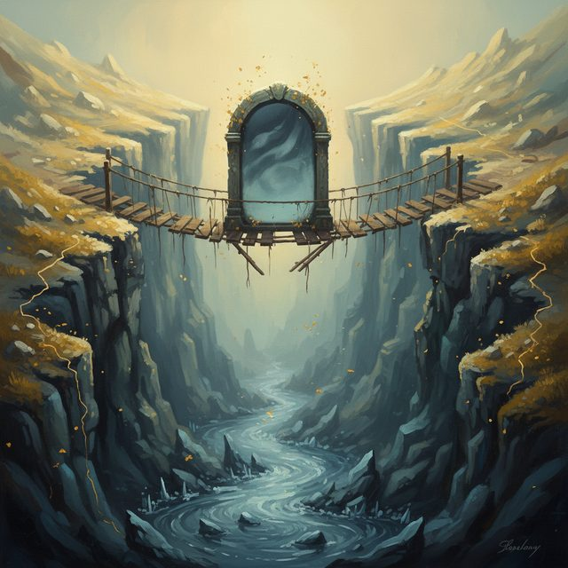
CH02-063
モチベーションの谷
CH02-063
完成の祝福／仕掛かりの減らし方
CH02-063
スプリントの重要性
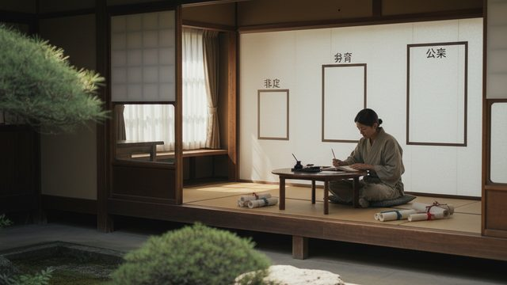
CH02-063
評価の距離／マルチプロジェクトの管理
CH02-063
終わりの打ち方
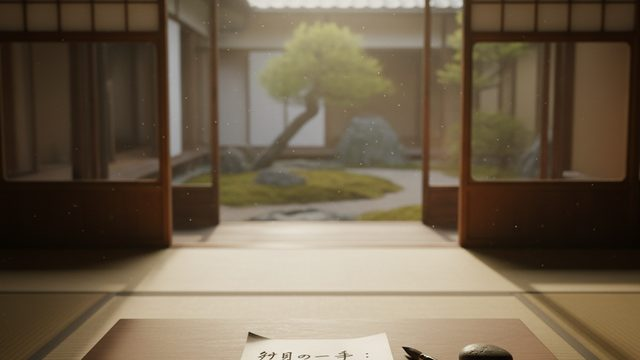
CH02-063
未来の自分への信頼
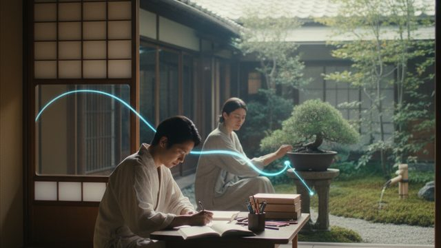
CH02-063
横滑りの重要性
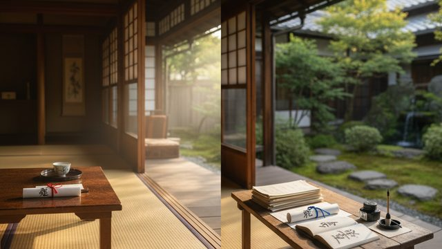
CH02-063
完成と改善の分離
CH02-063
罪悪感の扱い／環境の見える化
CH02-063
完成の祝福の共有／身体の動き／締め切りの使い分け
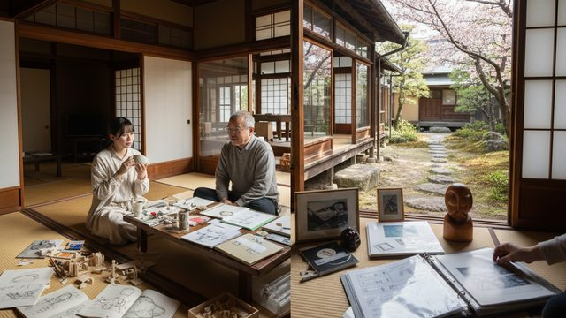
CH02-063
心理的安全／完成の物理的残し方
CH02-063
小さな終わりの習慣／積み重ねる力／遊び心の重要性／未来への…
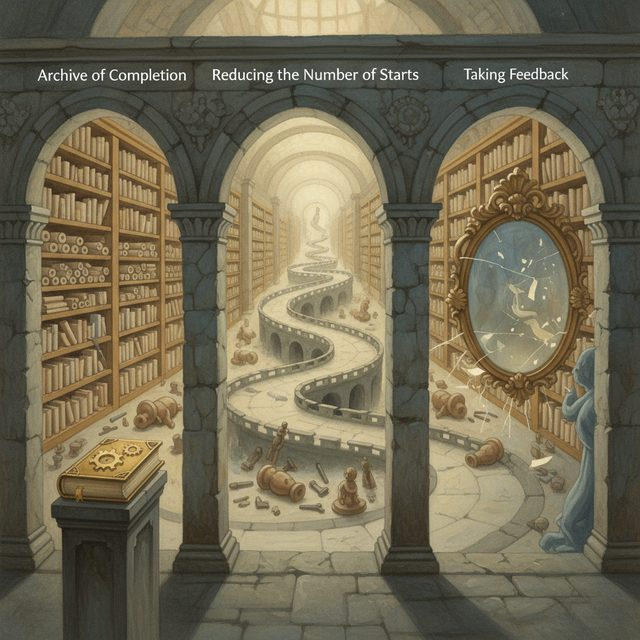
CH02-063
完成のアーカイブ／始める回数の減らし方／フィードバックの取…
CH02-063
幻想と現実の一歩／デモ作成の習慣／時間のバッファ
CH02-063
静寂の重要性／言葉に出すこと／中間の終わり
CH02-063
完成の定義の更新／質と速度のバランス
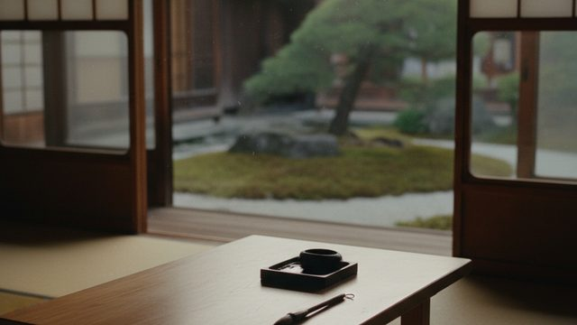
CH02-063
モノタスクの時間
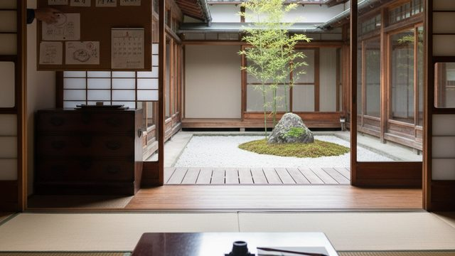
CH02-063
公開締め切り／視覚化の工夫
CH02-063
エネルギーの高低
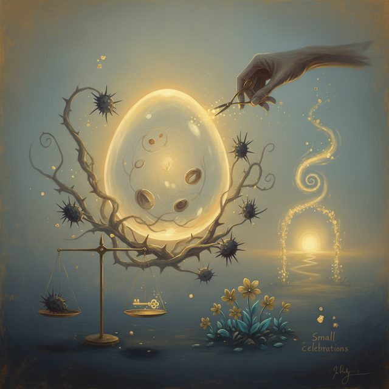
CH02-063
インキュベーションの時間／代償行動の対処／小さな祝祭
CH02-063
疲労と飽きの区別
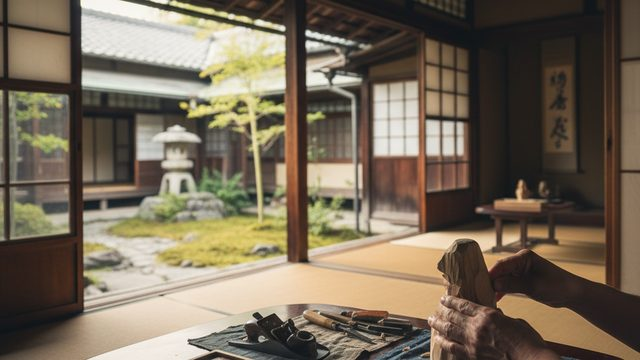
CH02-063
技術の重要性